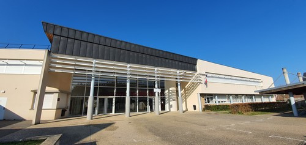
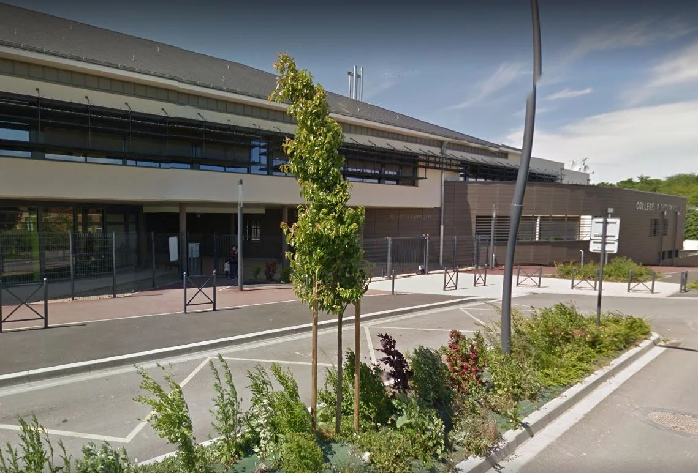
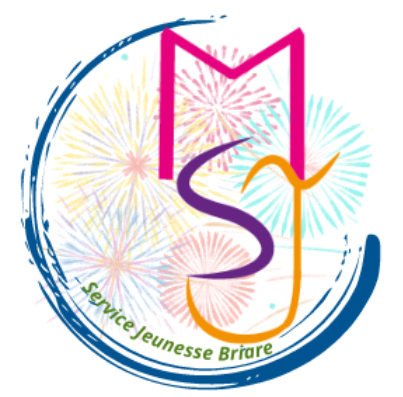
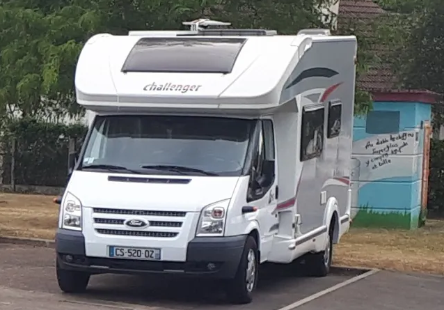
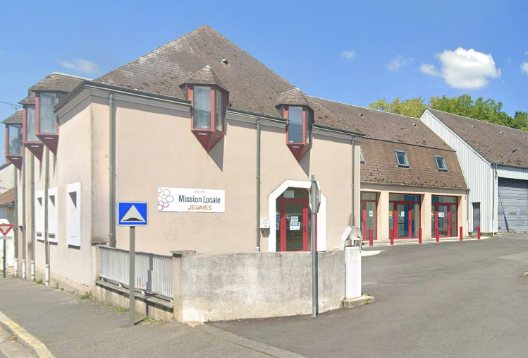

Adolescence & Jeunesse (11-25 ans)
Collèges

Collège Albert Camus (Briare)
Situé dans un zone résidentielle calme au nord de la ville de Briare le Canal, le collège Albert Camus accueille 400 élèves dans des locaux modernes et bien équipés.
Que ce soit en ULIS, en SEGPA ou en enseignement général, des équipes volontaires, bienveillantes et motivées prennent en charge tous les collégiens et les préparent à leurs futurs examens et études
Rue du du Port à Belleau
📞 02 38 37 02 83
📧 ce0450008pac-orleans-tours.fr
Site internet officiel

Collège Pierre Dézarnaulds (Châtillon-sur-Loire)
Situé à 80 kilomètres d’Orléans et à 20 kilomètres de Gien, le collège Pierre Dézarnaulds accueille environ 330 élèves chaque année.
2 allée du Paradis
📞 02 38 31 42 49
📧 ce0450017z@ac-orleans-tours.fr
Site internet officiel
Focus sur le Territoire Éducatif Rural (TER)
Le Territoire Éducatif Rural (TER) est un dispositif porté par l'Éducation nationale qui vise à renforcer les liens entre les écoles, les collèges et l'ensemble des acteurs éducatifs d'un même territoire rural : collectivités, associations, structures culturelles et sportives, professionnels de la petite enfance et de la jeunesse.
Son objectif est de lutter contre les inégalités d'accès à la culture, au numérique et à l'ouverture au monde que peut connaître un territoire rural, en fédérant les ressources locales autour de projets communs, de la maternelle au collège.
Depuis septembre 2024, une Convention “Territoire Educatif Rural” a été signée par l’Education Nationale autour du collège Albert Camus et toutes les communes de son secteur de rattachement.
Au lieu que l’école fasse d’un côté, la mairie de l’autre, les assos ailleurs, chacun travaille ensemble pour que les enfants aient plus d’opportunités pour apprendre, s’épanouir et découvrir le monde.
De la maternelle au collège, il s’agit de mettre plus de moyens humains et financiers pour plus de lien et de réussite pour les élèves dans les écoles, entre les écoles et entre les écoles et le collège :
- Davantage d’activités accessibles sans devoir aller loin.
- Un soutien renforcé pour les enfants qui en ont besoin.
- Des projets motivants : ateliers, sorties, découvertes.
- Un lien direct avec les familles pour écouter leurs besoins et leurs idées.
Sur la Communauté de communes Berry Loire Puisaye, ce dispositif permet de construire des parcours éducatifs cohérents entre les différentes structures accueillant les enfants et les jeunes, de la petite enfance jusqu'à l'adolescence.

Structures d'accueil et de loisirs
Culture Ados (Bee'Mobile)
Espace d’accueil pour les 10-18 ans qui propose toutes sortes d’animations physiques, culturelles, d’expression, techniques et scientifiques, mais également des sorties (paintball, patinoire, musée…).
Ouvert les mercredis après-midi, deux samedis par mois et la moitié des vacances scolaires. C’est un service itinérant qui se déplace sur l’ensemble de la communauté de communes (Bonny-sur-Loire, Châtillon-sur-Loire, Cernoy-en-Berry, Ouzouër-sur-Trézée…).
Un système de ramassage grâce à un minibus permet de récupérer et déposer les jeunes chez eux en cas d’impossibilité de déplacement. Il suffit de prévenir l’équipe en avance.
Mer, Sam (2/mois) 14h-18h, vacances 10h-18h
Adhésion : 15€/an
Local permanent : 1 rue de Bicètre, Bonny-sur-Loire
📞 07 57 40 10 28
📧 evsitinerant@laligue45.fr
Maison Saint-Jean (Briare)

Située sur le boulevard Buyser, à proximité du musée des Émaux, la Maison Saint-Jean de Briare se veut comme un lieu d’accueil municipal pour les jeunes de la commune, de l’entrée en 6 e et jusqu’à 17 ans.
Activités manuelles, artistiques, sportives, sorties, mini-séjours (camps pendant l’été), création de projets
49 Boulevard Buyser
📞 02 38 37 16 64 / 07 64 75 48 98
Ouvert les mercredis, un vendredi par mois et les vacances scolaires
L’inscription à la Maison Saint Jean
Séjours pédagogiques (Bee'Mobile)

Colonie d’une semaine (du lundi au vendredi) en camping. A destination des collégiens et lycéens. Séjours pédagogiques avec une résidence d’artistes (auteur, dessinateur…), ateliers sportifs, sorties culturelles…
Prix en fonction de votre lieu d’habitation ou des revenus des parents.
📞 07 57 40 10 28
📧 evsitinerant@laligue45.fr
Maison des Adolescents (AMARA 45)

Espace de soutien en santé mentale. Sa préoccupation : que vous alliez bien ! Ici, n’importe quel jeune de 11 à 25 ans peut venir parler de ce qui le préoccupe : angoisse, stress, petit ou gros souci… sans jugement.
Nous pouvons aussi accueillir les proches (parents, autres membres de la famille, professionnels…) pour les aider à gérer la situation du jeune.
Quel que soit votre genre, votre sexe biologique, votre orientation sexuelle, les sujets dont vous voulez parler, vous serez accueilli.e avec respect et bienveillance.
C’est un espace libre, gratuit, confidentiel, et anonyme si besoin. Pas besoin de document !
Vous nous donnez un prénom, votre âge, un moyen de vous contacter, et quelques infos pour nos statistiques (votre ville, comment vous nous avez connus…).
Comment ça se passe ?
Vous êtes reçu pour des entretiens qui durent entre 45 et 50 minutes. Lors du 1er rendez-vous, vous êtes généralement accueilli par deux membres de l’équipe.
Quel que soit votre âge entre 11 et 25 ans, vous pouvez venir seul ou accompagné de la personne de votre choix.
Si vous êtes mineur.e, vous pouvez venir même si vos parents ne sont pas au courant de votre démarche.Nous discuterons avec vous, évaluerons votre situation, et selon votre besoin et votre demande, nous verrons ensemble si vous souhaitez revenir, ou si un de nos partenaires gratuits serait mieux adapté que nous pour vous aider.
C’est vous qui décidez de la suite : pas de contrat !
Contact :
📞 07 85 76 64 75
📧 emda45@amara45.fr
Ils peuvent vous rencontrer dans les locaux de Montargis ou dans les locaux d’un partenaire :
MFR, collège, lycée, centre social…, dans le petit salon de notre camping-car…
Mission Locale de Gien

La Mission Locale permet aux jeunes de 16 à 25 ans d'être écoutés, de bénéficier d'une aide personnalisée et de trouver des solutions pour avancer dans leur vie professionnelle (orientation, formation, emploi) et/ou dans leur vie personnelle (logement, santé, citoyenneté, mobilité...)
La Mission locale propose également aux employeurs un véritable appui dans leurs recrutements (recherche ciblée de candidats, suivi dans l'emploi...)
30 rue Paul Bert, Gien
📞 02 38 67 25 62
mlgien@aijam.com
📧 mlgien@aijam.com